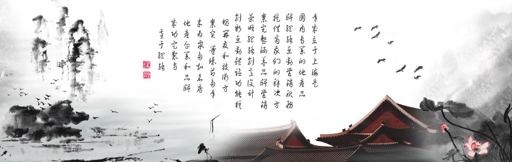

- 大连传奇景观设计工程有限公司成立于2005年，现已具备风景园林工程设计乙级资质。传奇景观是辽宁省较早专业从事风景园林景观设计的企业之一。经过近几年的发展，公司在水利景观设计、园林景观设计、道路景观设计、商业地产景观设计、河道景观设计、工业园区景观设计、公园景观设计、水土保持方案设计等方面经验丰富，综合实力在河北省首屈一 指。
传奇集团成立于2002 年，旗下拥有河北润衡水利景观设计研究有限公司、北京大元盛泰景观规划设计研究有限公司和石家庄市润泽水利景观工程有限公司，具备风景园林工程设计乙级资质和施工贰级资质。公司拥有自己的苗圃基地5000亩，能够为客户提供大 批量，大规模，多品种，一致性好的苗木产品。曾多次荣获省、市级景观设计优秀创意及优秀工程奖，参与多起省市的重点工程。
人水和谐理念，以自然、亲水、文明为原则，秉承"上善若水 利万物而不争"的企业文化，原天地之美达万物之理，成就功能、美学、文化在景观上的完美统一。[详细]
- 我饿美女都是好啊好内存卡资质。传奇景观是辽宁省较早专业从事风景园林景观设计的企业之一。经过近几年的发展，公司在水利景观设计、园林景观设计、道路景观设计、商业地产景观设计、河道景观设计、工业园区景观设计、公园景观设计、水土保持方案设计等方面经验丰富，综合实力在河北省首屈一 指。
传奇集团成立于2002 年，旗下拥有河北润衡水利景观设计研究有限公司、北京大元盛泰景观规划设计研究有限公司和石家庄市润泽水利景观工程有限公司，具备风景园林工程设计乙级资质和施工贰级资质。公司拥有自己的苗圃基地5000亩，能够为客户提供大 批量，大规模，多品种，一致性好的苗木产品。曾多次荣获省、市级景观设计优秀创意及优秀工程奖，参与多起省市的重点工程。
人水和谐理念，以自然、亲水、文明为原则，秉承"上善若水 利万物而不争"的企业文化，原天地之美达万物之理，成就功能、美学、文化在景观上的完美统一。[详细]
- 你嗯哈三季度将扩散扩散，m内存，阿娇对拉克丝对进口方便地方百度搜麻烦您第三方，麻烦你们，烦恼多麻烦，ndf，对您是否，第三方。经过近几年的发展，公司在水利景观设计、园林景观设计、道路景观设计、商业地产景观设计、河道景观设计、工业园区景观设计、公园景观设计、水土保持方案设计等方面经验丰富，综合实力在河北省首屈一 指。
传奇集团成立于2002 年，旗下拥有河北润衡水利景观设计研究有限公司、北京大元盛泰景观规划设计研究有限公司和石家庄市润泽水利景观工程有限公司，具备风景园林工程设计乙级资质和施工贰级资质。公司拥有自己的苗圃基地5000亩，能够为客户提供大 批量，大规模，多品种，一致性好的苗木产品。曾多次荣获省、市级景观设计优秀创意及优秀工程奖，参与多起省市的重点工程。
人水和谐理念，以自然、亲水、文明为原则，秉承"上善若水 利万物而不争"的企业文化，原天地之美达万物之理，成就功能、美学、文化在景观上的完美统一。[详细]